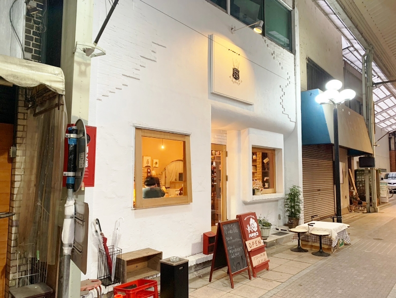
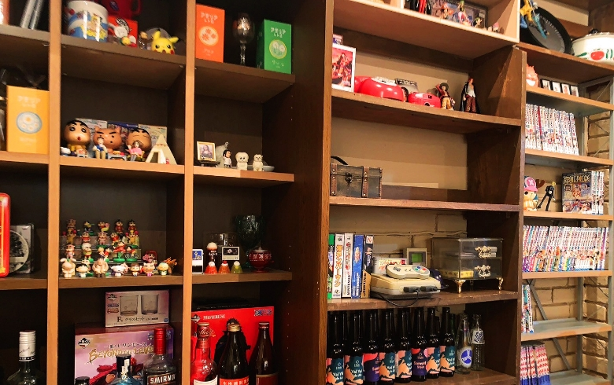
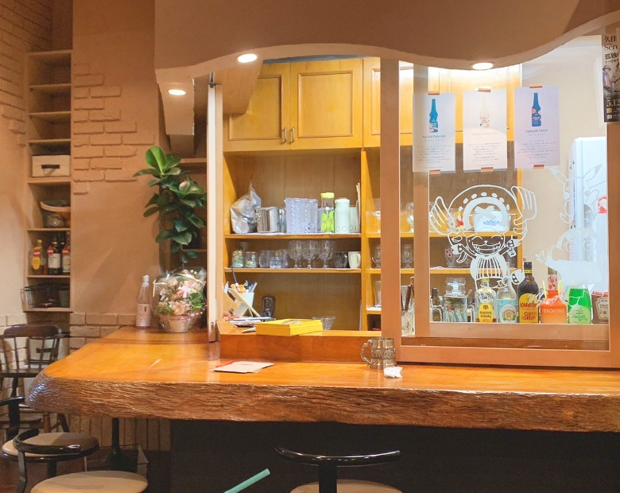

3月22日オープン！ 平成レトロなパンとお酒のお店【ハチロコ】
2024年5月9日
「ハチロコ」は、前橋にある平成レトロな雰囲気のパンとお酒のお店です。ここでは、美味しいパンと厳選されたお酒が楽しめます。店内は木の温もりに包まれ、ゆったりとした時間が流れています。
その他にも多くのメニューがあり、何を食べるかとても悩みました。座席は10席程ありました。
メニュー
・あてパン食べ放題 1人500円
他のメニューからワンオーダーした方限定！
パンの種類は日替わりでバケット、フォカッチャ、ミルクパン、ブリオルシュ、ポップオーバーなど、さまざまなパンがお楽しみいただけます。しかも、店主がお料理に合ったパンを厳選して提供してくれるので、味わい深い一品が待っています。
先ほど紹介したパン以外にも様々な魅力的なパンが日替わりで出てくるので、ぜひお店に行って確かめてみてください！
外観と内装



店主にインタビュー
お勧めのメニューは何ですか？
・あてパン食べ放題 1人500円
お酒のおつまみにパンっていうのはまだまだ群馬だと意外性があったり、本当にパンで飲める？っていう声もあったりするので値段もお手頃だと思いますしぜひ試してほしいです！
お店のコンセプトは何ですか？
まだ作り上げている途中ですが、20代後半～30代の方が懐かしいと思うような小物や雑貨で雰囲気を作り出せればいいなと思っています。八チロコにいる間だけでも普段の社会生活を忘れて純粋に楽しんでほしいなと思っています。
アクセス情報
共愛から車で21分程度
前橋駅から徒歩で22分程度
- 住所: 前橋市千代田町3-3-22
- 営業時間: 17:00~24:00(LO.23:00)
- 定休日: 火・水曜日
- 駐車場: 専用・提携駐車場はありません
- インスタグラム: @hachiroco